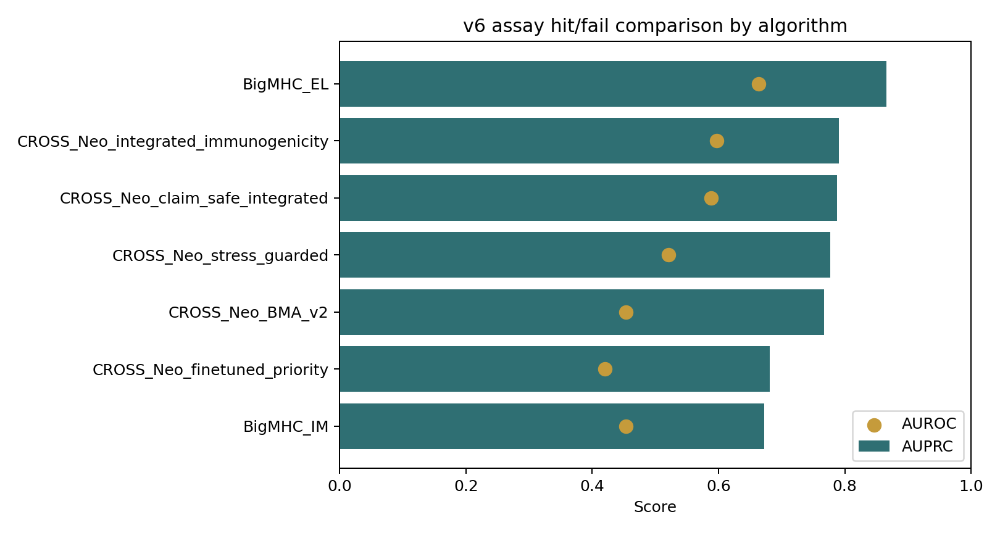
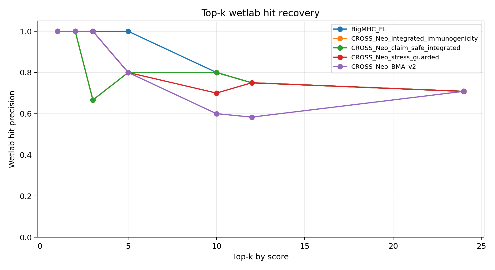
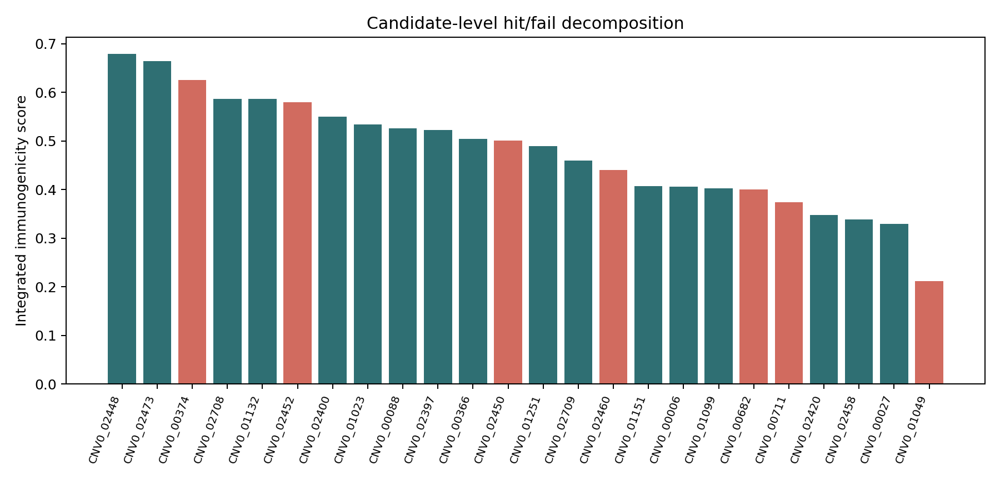

01Summary
This is the exact product surface needed after the assay: input candidate calls, output endpoint unlocks, algorithm comparison, and failure-mode labels. Current result source is smoke_confirmatory_threshold_v6.



02Algorithm Metrics
| algorithm | score_column | n | hits | hit_rate | AUROC | AUPRC | top1_hits | top1_precision | top2_hits | top2_precision | top3_hits | top3_precision | top5_hits | top5_precision | top10_hits | top10_precision | top12_hits | top12_precision | top24_hits | top24_precision |
|---|---|---|---|---|---|---|---|---|---|---|---|---|---|---|---|---|---|---|---|---|
| BigMHC_EL | bigmhc_el_score | 24 | 17 | 0.708 | 0.664 | 0.866 | 1 | 1.000 | 2 | 1.000 | 3 | 1.000 | 5 | 1.000 | 8 | 0.800 | 9 | 0.750 | 17 | 0.708 |
| CROSS_Neo_integrated_immunogenicity | immunogenicity_discovery_score | 24 | 17 | 0.708 | 0.597 | 0.790 | 1 | 1.000 | 2 | 1.000 | 2 | 0.667 | 4 | 0.800 | 8 | 0.800 | 9 | 0.750 | 17 | 0.708 |
| CROSS_Neo_claim_safe_integrated | immunogenicity_claim_safe_score | 24 | 17 | 0.708 | 0.588 | 0.788 | 1 | 1.000 | 2 | 1.000 | 2 | 0.667 | 4 | 0.800 | 8 | 0.800 | 9 | 0.750 | 17 | 0.708 |
| CROSS_Neo_stress_guarded | stress_guarded_discovery_score | 24 | 17 | 0.708 | 0.521 | 0.777 | 1 | 1.000 | 2 | 1.000 | 3 | 1.000 | 4 | 0.800 | 7 | 0.700 | 9 | 0.750 | 17 | 0.708 |
| CROSS_Neo_BMA_v2 | bma_v2_discovery_score | 24 | 17 | 0.708 | 0.454 | 0.767 | 1 | 1.000 | 2 | 1.000 | 3 | 1.000 | 4 | 0.800 | 6 | 0.600 | 7 | 0.583 | 17 | 0.708 |
| CROSS_Neo_finetuned_priority | finetuned_experiment_priority_score | 24 | 17 | 0.708 | 0.420 | 0.681 | 0 | 0.000 | 1 | 0.500 | 2 | 0.667 | 3 | 0.600 | 7 | 0.700 | 8 | 0.667 | 17 | 0.708 |
| BigMHC_IM | bigmhc_im_score | 24 | 17 | 0.708 | 0.454 | 0.672 | 0 | 0.000 | 1 | 0.500 | 1 | 0.333 | 3 | 0.600 | 7 | 0.700 | 8 | 0.667 | 17 | 0.708 |
03Endpoint Unlocks
| plate_v4_arm | success_count | threshold_successes | confirmatory_threshold_successes | exploratory_unlock_status | confirmatory_unlock_status | claim_layer_after_unlock |
|---|---|---|---|---|---|---|
| B_mechanism_TCR_MD | 2 | 1 | 2 | UNLOCKED | UNLOCKED | orthogonal TCR/MD mechanistic support |
| A_clean_discovery | 3 | 2 | 3 | UNLOCKED | UNLOCKED | wetlab-supported clean antigen discovery lane |
| C_label_rescue | 2 | 1 | 2 | UNLOCKED | UNLOCKED | label-noise or assay-mismatch evidence |
| E_positive_QC_control | 3 | 3 | 3 | UNLOCKED | UNLOCKED | assay QC only |
| D_specificity_moat | 4 | 3 | 4 | UNLOCKED | UNLOCKED | specificity-aware control moat |
| F_model_boundary | 3 | 2 | 3 | UNLOCKED | UNLOCKED | model-boundary clarification |
04Hit/Fail Breakdown
| algorithm | score_column | score_bin | n | hits | hit_rate | mean_score |
|---|---|---|---|---|---|---|
| BigMHC_IM | bigmhc_im_score | Q1_low_to_high | 6 | 4 | 0.667 | 0.127 |
| BigMHC_IM | bigmhc_im_score | Q2_low_to_high | 6 | 5 | 0.833 | 0.371 |
| BigMHC_IM | bigmhc_im_score | Q3_low_to_high | 6 | 4 | 0.667 | 0.448 |
| BigMHC_IM | bigmhc_im_score | Q4_low_to_high | 6 | 4 | 0.667 | 0.650 |
| BigMHC_EL | bigmhc_el_score | Q1_low_to_high | 6 | 3 | 0.500 | 0.025 |
| BigMHC_EL | bigmhc_el_score | Q2_low_to_high | 6 | 5 | 0.833 | 0.528 |
| BigMHC_EL | bigmhc_el_score | Q3_low_to_high | 6 | 3 | 0.500 | 0.911 |
| BigMHC_EL | bigmhc_el_score | Q4_low_to_high | 6 | 6 | 1.000 | 0.975 |
| CROSS_Neo_stress_guarded | stress_guarded_discovery_score | Q1_low_to_high | 6 | 4 | 0.667 | 0.405 |
| CROSS_Neo_stress_guarded | stress_guarded_discovery_score | Q2_low_to_high | 6 | 4 | 0.667 | 0.501 |
| CROSS_Neo_stress_guarded | stress_guarded_discovery_score | Q3_low_to_high | 6 | 5 | 0.833 | 0.606 |
| CROSS_Neo_stress_guarded | stress_guarded_discovery_score | Q4_low_to_high | 6 | 4 | 0.667 | 0.711 |
| CROSS_Neo_BMA_v2 | bma_v2_discovery_score | Q1_low_to_high | 6 | 5 | 0.833 | 0.475 |
| CROSS_Neo_BMA_v2 | bma_v2_discovery_score | Q2_low_to_high | 6 | 5 | 0.833 | 0.532 |
| CROSS_Neo_BMA_v2 | bma_v2_discovery_score | Q3_low_to_high | 6 | 2 | 0.333 | 0.637 |
| CROSS_Neo_BMA_v2 | bma_v2_discovery_score | Q4_low_to_high | 6 | 5 | 0.833 | 0.676 |
| CROSS_Neo_finetuned_priority | finetuned_experiment_priority_score | Q1_low_to_high | 6 | 5 | 0.833 | 0.388 |
| CROSS_Neo_finetuned_priority | finetuned_experiment_priority_score | Q2_low_to_high | 6 | 4 | 0.667 | 0.818 |
| CROSS_Neo_finetuned_priority | finetuned_experiment_priority_score | Q3_low_to_high | 6 | 4 | 0.667 | 0.844 |
| CROSS_Neo_finetuned_priority | finetuned_experiment_priority_score | Q4_low_to_high | 6 | 4 | 0.667 | 0.871 |
| CROSS_Neo_integrated_immunogenicity | immunogenicity_discovery_score | Q1_low_to_high | 6 | 3 | 0.500 | 0.334 |
| CROSS_Neo_integrated_immunogenicity | immunogenicity_discovery_score | Q2_low_to_high | 6 | 5 | 0.833 | 0.434 |
| CROSS_Neo_integrated_immunogenicity | immunogenicity_discovery_score | Q3_low_to_high | 6 | 5 | 0.833 | 0.523 |
| CROSS_Neo_integrated_immunogenicity | immunogenicity_discovery_score | Q4_low_to_high | 6 | 4 | 0.667 | 0.620 |
| CROSS_Neo_claim_safe_integrated | immunogenicity_claim_safe_score | Q1_low_to_high | 6 | 4 | 0.667 | 0.138 |
| CROSS_Neo_claim_safe_integrated | immunogenicity_claim_safe_score | Q2_low_to_high | 6 | 4 | 0.667 | 0.182 |
| CROSS_Neo_claim_safe_integrated | immunogenicity_claim_safe_score | Q3_low_to_high | 6 | 5 | 0.833 | 0.220 |
| CROSS_Neo_claim_safe_integrated | immunogenicity_claim_safe_score | Q4_low_to_high | 6 | 4 | 0.667 | 0.261 |
05Candidate-Level Calls
| candidate_id | peptide | hla_allele_4digit | plate_v4_arm | normalized_candidate_success | hit_fail_decomposition | bigmhc_im_score | stress_guarded_discovery_score | immunogenicity_discovery_score | claim_boundary_execution |
|---|---|---|---|---|---|---|---|---|---|
| CNV0_02448 | ILDKVLVHL | HLA-A*02:01 | A_clean_discovery | PASS | hit_clean_antigen | 0.577 | 0.494 | 0.679 | clean BAR-Neo experiment priority; patient metadata still blocks clinical claim |
| CNV0_02473 | KEFEDDIINW | HLA-B*44:03 | E_positive_QC_control | PASS | hit_positive_qc | 0.749 | 0.716 | 0.665 | assay QC only; cannot support novelty |
| CNV0_00374 | NYPGFLTIL | HLA-C*07:02 | E_positive_QC_control | FAIL | fail_assay_qc | 0.698 | 0.679 | 0.625 | assay QC only; cannot support novelty |
| CNV0_02708 | ALDPLLLRI | HLA-A*02:01 | A_clean_discovery | PASS | hit_clean_antigen | 0.493 | 0.501 | 0.587 | clean BAR-Neo experiment priority; patient metadata still blocks clinical claim |
| CNV0_01132 | GADGVGKSAL | HLA-C*08:02 | B_mechanism_TCR_MD | PASS | hit_tcr_md_mechanism | 0.181 | 0.565 | 0.586 | TCR/MD diagnostic wetlab priority; not clean benchmark or clinical claim |
| CNV0_02452 | LLDGFLATV | HLA-A*02:01 | A_clean_discovery | FAIL | fail_presentation_or_specificity | 0.781 | 0.507 | 0.579 | clean BAR-Neo experiment priority; patient metadata still blocks clinical claim |
| CNV0_02400 | ETSKQVTRW | HLA-A*25:01 | D_specificity_moat | PASS | hit_specificity_control | 0.557 | 0.554 | 0.550 | hard-negative or false-negative audit; use to sharpen specificity |
| CNV0_01023 | FLDEFMEGV | HLA-A*02:01 | F_model_boundary | PASS | hit_model_boundary_resolution | 0.538 | 0.581 | 0.535 | TCR/structure disagreement audit; no positive claim until resolved |
| CNV0_00088 | YAYDNFGVLGL | HLA-C*03:03 | E_positive_QC_control | PASS | hit_positive_qc | 0.367 | 0.738 | 0.526 | assay QC only; cannot support novelty |
| CNV0_02397 | LPIQYEPVL | HLA-B*35:03 | D_specificity_moat | PASS | hit_specificity_control | 0.392 | 0.583 | 0.523 | hard-negative or false-negative audit; use to sharpen specificity |
| CNV0_00366 | QSPASLSSL | HLA-C*01:02 | E_positive_QC_control | PASS | hit_positive_qc | 0.188 | 0.677 | 0.504 | assay QC only; cannot support novelty |
| CNV0_02450 | KELEGILLL | HLA-B*44:03 | A_clean_discovery | FAIL | fail_presentation_or_specificity | 0.513 | 0.511 | 0.501 | clean BAR-Neo experiment priority; patient metadata still blocks clinical claim |
| CNV0_01251 | YLDELIRNT | HLA-A*02:01 | F_model_boundary | PASS | hit_model_boundary_resolution | 0.441 | 0.496 | 0.489 | TCR/structure disagreement audit; no positive claim until resolved |
| CNV0_02709 | ALPVALPSL | HLA-A*02:01 | A_clean_discovery | PASS | hit_clean_antigen | 0.387 | 0.463 | 0.460 | clean BAR-Neo experiment priority; patient metadata still blocks clinical claim |
| CNV0_02460 | GIVEGLITTV | HLA-A*02:01 | A_clean_discovery | FAIL | fail_presentation_or_specificity | 0.419 | 0.394 | 0.441 | clean BAR-Neo experiment priority; patient metadata still blocks clinical claim |
| CNV0_01151 | HMTEVVRHC | HLA-A*02:01 | B_mechanism_TCR_MD | PASS | hit_tcr_md_mechanism | 0.375 | 0.272 | 0.407 | TCR/MD diagnostic wetlab priority; not clean benchmark or clinical claim |
| CNV0_00006 | VKEDPKWEF | HLA-C*07:02 | C_label_rescue | PASS | hit_label_rescue | 0.161 | 0.716 | 0.406 | rescue/audit case; could expose false-negative label or assay mismatch |
| CNV0_01099 | FRSGLDSYV | HLA-C*06:02 | F_model_boundary | PASS | hit_model_boundary_resolution | 0.380 | 0.499 | 0.403 | TCR/structure disagreement audit; no positive claim until resolved |
| CNV0_00682 | NYRREPPHL | HLA-C*07:02 | C_label_rescue | FAIL | fail_label_rescue | 0.338 | 0.680 | 0.401 | rescue/audit case; could expose false-negative label or assay mismatch |
| CNV0_00711 | RREPPHLARNF | HLA-C*07:02 | C_label_rescue | FAIL | fail_label_rescue | 0.205 | 0.693 | 0.374 | rescue/audit case; could expose false-negative label or assay mismatch |
| CNV0_02420 | KLANPLPYT | HLA-A*02:01 | D_specificity_moat | PASS | hit_specificity_control | 0.381 | 0.460 | 0.348 | hard-negative or false-negative audit; use to sharpen specificity |
| CNV0_02458 | IIGAGPAEV | HLA-A*02:01 | D_specificity_moat | PASS | hit_specificity_control | 0.433 | 0.431 | 0.339 | hard-negative or false-negative audit; use to sharpen specificity |
| CNV0_00027 | GNNDVKEDP | HLA-C*07:02 | C_label_rescue | PASS | hit_label_rescue | 0.005 | 0.721 | 0.330 | rescue/audit case; could expose false-negative label or assay mismatch |
| CNV0_01049 | LSSVSFFLV | HLA-A*11:01 | F_model_boundary | FAIL | fail_model_boundary | 0.022 | 0.409 | 0.211 | TCR/structure disagreement audit; no positive claim until resolved |
06Actual Wetlab Handoff
When real results are entered, run:
python scripts/interpret_cross_neo_assay_results_v6.py --results .../candidate_result_entry_v6.tsv --endpoint-plan .../preregistered_endpoint_plan_v5.tsv --out-dir .../interpreted_results_v6
Then run:
python scripts/build_cross_neo_wetlab_algorithm_comparison_v6.py --candidate-calls .../interpreted_results_v6/candidate_calls_v6.tsv --endpoint-calls .../interpreted_results_v6/endpoint_calls_v6.tsv --result-source actual_wetlab_v6